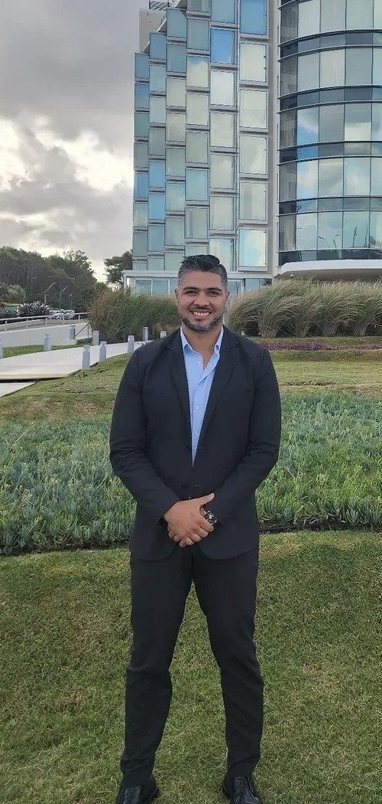

Protegemos personas, patrimonio y operaciones.Protegemos pessoas, patrimônio e operações.
Consultoría en seguridad, análisis de riesgo y capacitación de equipos, con más de 20 años de experiencia real, desde la línea de frente hasta la gerencia.Consultoria em segurança, análise de risco e capacitação de equipes, com mais de 20 anos de experiência real, da linha de frente à gerência.

Walter Gamboa
Gerente · CIPRODEC S.R.L. – Seguridad e InvestigaciónGerente · CIPRODEC S.R.L. – Segurança e Investigação
Construyó su carrera dentro de la operación: empezó como agente de seguridad y pasó por todos los cargos hasta llegar a Gerente de Seguridad de un grupo de hotelería y juegos.Construiu a carreira dentro da operação: começou como agente de segurança e passou por todos os cargos até chegar a Gerente de Segurança de um grupo de hotelaria e jogos.
Hoy dirige servicios de seguridad con equipo operativo propio, es docente en la formación de vigilantes y supervisores, y ayuda a las empresas a organizar su seguridad con método, protocolos claros y equipos bien entrenados.Hoje dirige serviços de segurança com equipe operacional própria, é professor na formação de vigilantes e supervisores e ajuda empresas a organizar a sua segurança com método, protocolos claros e equipes bem treinadas.
- 20+
- años en seguridadanos em segurança
- 10
- años como Gerente de Seguridadanos como Gerente de Segurança
- 1.000+
- empleados en el grupofuncionários no grupo
- 4+3
- casinos y hoteles bajo su gestióncassinos e hotéis sob a sua gestão
- WhatsApp +55 (34) 99936-0684
- E-mail ciprodec.consultoriaseguridad@gmail.com
- CentralCentral Central de seguridad en Frutal / MG, BrasilCentral de segurança em Frutal / MG, Brasil
- IdiomasIdiomas Español y portuguésPortuguês e espanhol
Servicios de Seguridad de BienesServiços de Segurança Patrimonial
Análisis de riesgo y plan de seguridadAnálise de risco e plano de segurança
Diagnóstico de las instalaciones, puntos vulnerables e informe con medidas priorizadas por costo e impacto.Diagnóstico das instalações, pontos vulneráveis e relatório com medidas priorizadas por custo e impacto.
Protocolos y manuales operativosProtocolos e manuais operacionais
Portería, control de acceso, rondas, novedades, prevención de incendios y emergencias.Portaria, controle de acesso, rondas, ocorrências, prevenção de incêndios e emergências.
Capacitación de equiposCapacitação de equipes
Entrenamiento de vigiladores, porteros y supervisores. Seguridad para grandes eventos.Treinamento de vigilantes, porteiros e supervisores. Segurança para grandes eventos.
Seguridad hoteleraSegurança hoteleira
Estructuración o auditoría de la seguridad de hoteles y posadas: huéspedes, personal, patrimonio y eventos.Estruturação ou auditoria da segurança de hotéis e pousadas: hóspedes, equipe, patrimônio e eventos.
Gestión de servicios de seguridadGestão de serviços de segurança
Supervisión de equipos, turnos, indicadores y control de empresas tercerizadas.Supervisão de equipes, escalas, indicadores e controle de empresas terceirizadas.
Gerencia interina o permanenteGestão interina ou permanente
Disponible para asumir la coordinación o gerencia de seguridad de tu empresa.Disponível para assumir a coordenação ou gerência de segurança da sua empresa.
Dónde podemos ayudarOnde podemos ajudar
Condominios y barrios cerradosCondomínios
Portería, control de acceso y plan de seguridad para los residentes.Portaria, controle de acesso e plano de segurança para moradores.
Industrias y usinasIndústrias e usinas
Protección de plantas, patios, cargas y acceso de terceros.Proteção de plantas, pátios, cargas e acesso de terceiros.
Agro y mineríaAgronegócio e mineração
Estancias, areneras y áreas extensas con poca vigilancia.Fazendas, portos de areia e áreas extensas com baixa vigilância.
Hoteles y posadasHotéis e pousadas
Seguridad de huéspedes y patrimonio sin perder la hospitalidad.Segurança de hóspedes e patrimônio sem perder a hospitalidade.
EventosEventos
Planificación y equipos para eventos de gran público.Planejamento e equipes para eventos de grande público.
Comercio, logística y obrasComércio, logística e obras
Prevención de pérdidas, rutinas de apertura, cierre y transporte. Custodia de materiales y equipos en obra.Prevenção de perdas, rotinas de abertura, fechamento e transporte. Proteção de materiais e equipamentos na obra.
Un método simple y claroUm método simples e claro
Visita y diagnósticoVisita e diagnóstico
Conocemos tu operación en el lugar y relevamos los riesgos reales.Conhecemos a sua operação no local e levantamos os riscos reais.
Plan de acciónPlano de ação
Informe con prioridades, costos y plazos.Relatório com prioridades, custos e prazos.
ImplementaciónImplementação
Protocolos, manuales y capacitación del equipo.Protocolos, manuais e capacitação da equipe.
SeguimientoAcompanhamento
Revisión de resultados y ajustes continuos.Revisão dos resultados e ajustes contínuos.
Una carrera entera dedicada a la seguridadUma carreira inteira dedicada à segurança
- 2002Ejército ArgentinoExército ArgentinoSoldado voluntario · Regimiento de Infantería de Monte.Soldado voluntário · Regimento de Infantaria de Selva.
- 2006Hotel Casino IguazúAgente, encargado, supervisor, supervisor general y coordinador.Agente, encarregado, supervisor, supervisor geral e coordenador.
- 2012Gerente de SeguridadGerente de SegurançaAnálisis de riesgo, protocolos y planificación en casino y hotelería.Análise de risco, protocolos e planejamento em cassino e hotelaria.
- 2022APP Consultoría de SeguridadDirección de servicio de vigilancia con equipo propio.Direção de serviço de vigilância com equipe própria.
- 2023MGA ConsultoriaServicios y gestión empresarial en Brasil.Serviços e gestão empresarial no Brasil.
Docencia:Docência: profesor en la UTN en cursos de formación de vigiladores y supervisores (especialidad en seguridad hotelera y de casino) e instructor de seguridad para grandes eventos en las escuelas Labre (Foz do Iguaçu) y Delta Star (Cascavel).professor na UTN em cursos de formação de vigilantes e supervisores (especialidade em segurança hoteleira e de cassino) e instrutor de segurança para grandes eventos nas escolas Labre (Foz do Iguaçu) e Delta Star (Cascavel).
DiferencialesDiferenciais
16 años en operación 24 horas16 anos em operação 24 horas
Hotel y casino: uno de los ambientes más exigentes en seguridad.Hotel e cassino: um dos ambientes mais exigentes em segurança.
Conoce cada funciónConhece cada função
Ya las ejerció todas, de agente a gerente.Já exerceu todas, de agente a gerente.
Profesor e instructorProfessor e instrutor
Formación de vigiladores, supervisores y seguridad para eventos.Formação de vigilantes, supervisores e segurança para eventos.
BilingüeBilíngue
Español y portugués: Argentina, Paraguay y Brasil.Português e espanhol: Argentina, Paraguai e Brasil.
Agendá una visita de diagnóstico sin compromiso.Agende uma visita de diagnóstico sem compromisso.
Conocemos tu operación y te indicamos con claridad qué mejorar primero.Conhecemos a sua operação e indicamos, com clareza, o que melhorar primeiro.